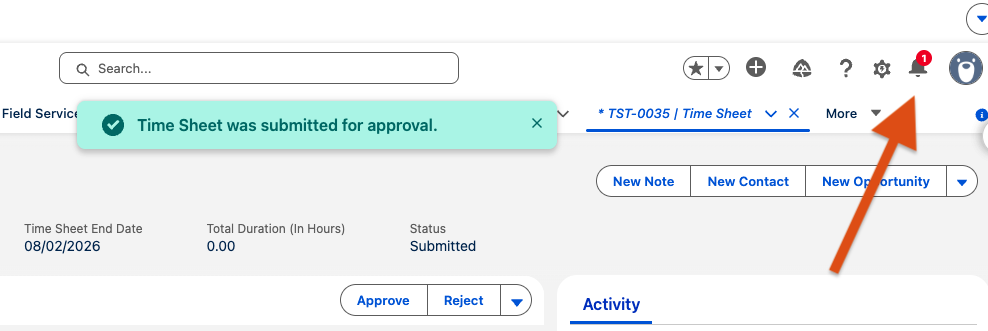
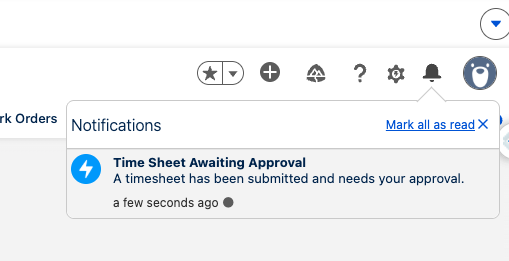
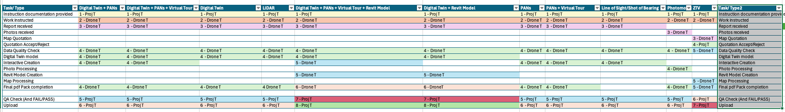
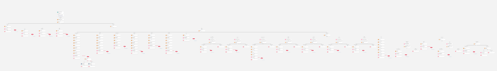
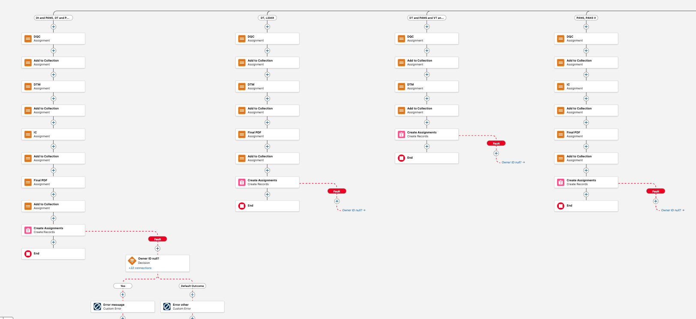
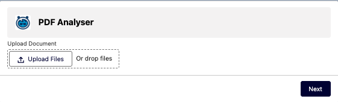
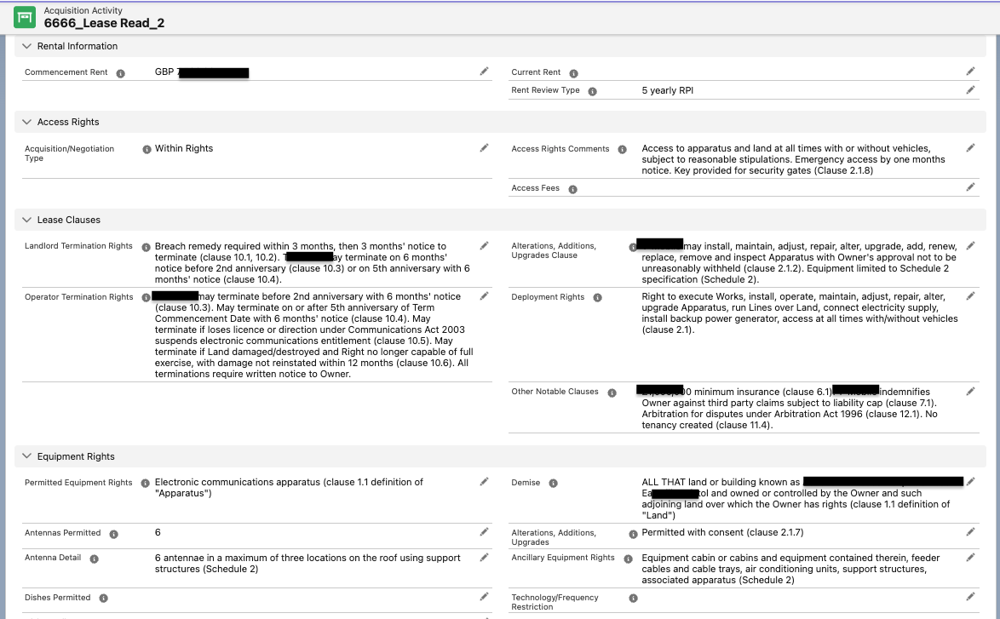
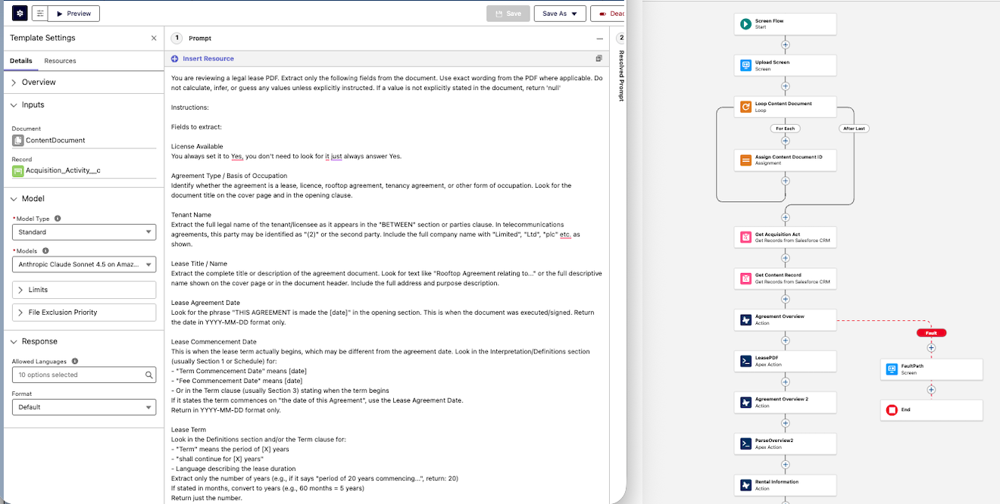

Intro

I’ve been part of the Salesforce ecosystem for just over a year, and I love it.
Salesforce has become my work, my hobby, and—my friend.
My mindset is that the sky is the limit, let's go!
I have been spending my weekends and after work continuously
studying/experimenting/challenging myself,
because I want to go up, and I want to do it fast.
I have been using AI and we should embrace it — I can build any idea that comes to mind.
Have a look at my LWC tasks: complex developer solutions done in a day.
This does fascinate me!
View Flows
Flows
Go to Agentforce
Public Group Management
Problem
Salesforce’s native permission model blocks project managers from adding or removing users
from project public groups, creating unnecessary admin dependency.
Solution
A system-context screen flow that lets project managers add or remove public group members.
Avonni elements (picker/data Table/button):


Flow

Key points
- Used GroupMember as the junction object to add and remove members by GroupMember.Id.
- Converted record collections into text collections to support efficient IN / NOT IN filtering.
- Validated that users were selected before processing.
- Added a confirmation step to prevent accidental changes.
Back to Flows
Timesheets
Problem
Approval processes natively send email notifications to approvers but do not generate custom notifications.
Solution
Built a record-triggered flow that detects when a TimeSheet enters an approval process assigned to a queue,
retrieves queue members, and sends a custom notification to each approver.


Key points
- Used ProcessInstance to detect active approval processes.
- Retrieved ProcessInstanceWorkitem to confirm pending approval.
- Iterated through queue members to build a recipient ID collection.
- Sent Custom Notifications to all approvers using a notification type.
Flow

Back to Flows
Assignment Sequencing Flow
Problem
Different task types required assignments to be created in a specific step-by-step order,
and we had to ensure those assignments followed the correct sequence.

Solution
- Enforced sequencing to ensure assignments are created in the correct order.
- Used assignments and collections to prepare records prior to creation.
- Created assignments only when prerequisite stages were met.
Flow


Back to Flows
Agentforce
Go to LWC
Agentforce PDF read
Problem
Time-consuming manual extraction and entry.
Solution
Used prompts to extract approximately 30 fields from a PDF document.


- Used prompt actions in a flow to extract fields from PDF.
- Implemented Apex to map prompt responses to fields.
You can check out the Apex class here:
LeasePDF.cls

Back to Agentforce
My Presentation
I ran an Agentforce training session for my colleagues and created a presentation to explain what Agentforce is.
The PowerPoint is around 100 slides and focuses on the topics people need to understand quickly for the exam.
View the PDF Here.
Some Sample slides


Back to Agentforce
LWC
What I built
Add your LWC story here (what problem it solved, what it does, and what’s impressive about it).
Repo / links
Add GitHub links, screenshots, and short bullet points.
Contact
Contact
Back to top